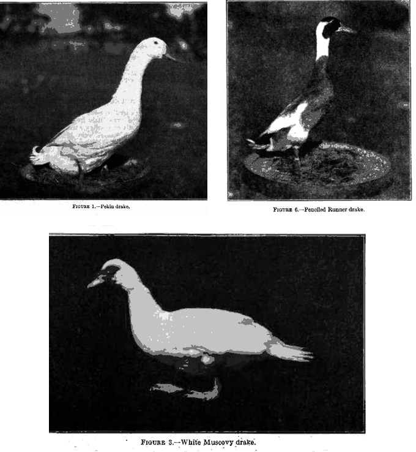
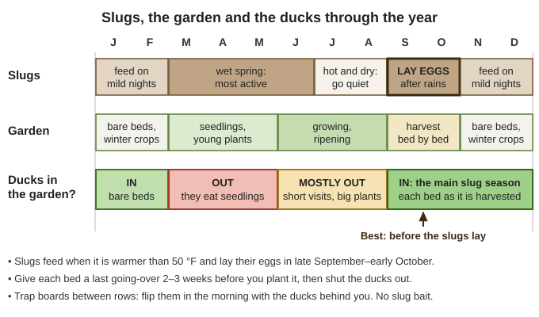
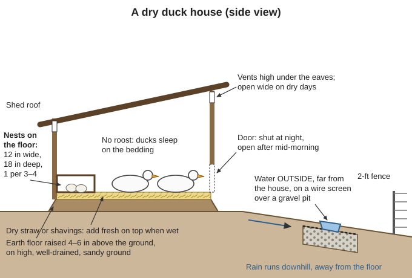
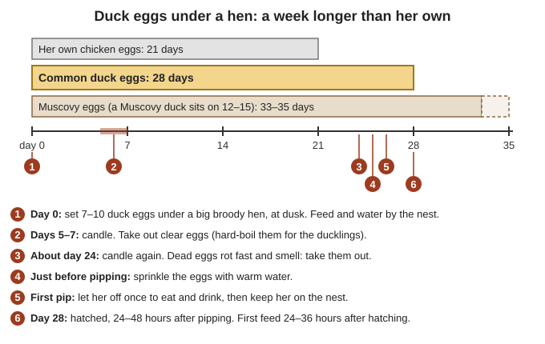
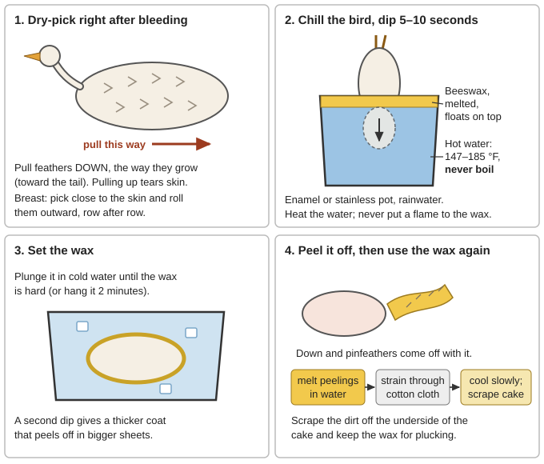

📘 Guides › 🐐 Animals · 🆘 Emergency · 📇 Index A–Z · 💬 Ask
How to keep ducks that feed a household and renew themselves with no feed store, vet, hatchery or electricity: choosing breeds, turning ducks loose on the slugs of our wet winters without losing the garden, a dry house, feeding on forage and home-grown grain, niacin, eggs, hatching under hens or Muscovies, brooding with no power, predators, sickness, plucking with a beeswax dip, down, and how many ducks a family needs. Where duck-keeping is the same as chicken-keeping, this guide sends you to the Chickens guide instead of repeating it. The duck books are in Animals\Poultry (USDA Duck Raising, Raising Healthy Poultry, Practical Poultry Raising), with more in Small-Livestock\Chickens, Small-Livestock\Slaughter-Processing, Animals\Planning-Predators-Toxic-Plants and Gardening-Food (all under Southern-Oregon\; the download list is local/library-files.txt). Raising a Few Ducks (MSU) is on the drive but has no readable text, so nothing here comes from it. Where this guide works a number out itself it says (arithmetic); check it with the Calculator.
The short version
- Lock ducks in every night and keep them in until mid-morning. Great horned owls take ducks (Kentucky ID-245, p. 4), and ducks lay early, so the eggs end up in the house, not the pond (FB 697, p. 19).
- Ducks clean slugs out of a garden that isn't growing. They "keep a mature garden free of snails and slugs. Don't let them in a growing garden — they will devour it" (Practical Poultry Raising, p. 192). Their big months are September–October, before slugs lay their eggs (OSU EM 9027, p. 15).
- Water outside, bedding dry. Duck droppings are over 90% water; put waterers as far from the house as you can (Raising Healthy Poultry, p. 103). Moldy straw causes a fungal pneumonia.
- Never feed moldy grain: 0.75 ppm of aflatoxin can kill a duckling (FAO, p. 51). Sour mash causes convulsions and death (FB 697, p. 23).
- Khaki Campbells and Runners lay 230–300+ eggs a year (Raising Healthy Poultry, p. 97), but Runners and Pekins "rarely sit" (FB 697, p. 19): a Muscovy or a broody hen hatches for you. Duck eggs take 28 days, Muscovy eggs about 35 (Raising Healthy Poultry, p. 109).
- Ducklings: warm and dry. About 90 °F the first week, 5 °F less each week (Practical Poultry Raising, p. 192), and no swimming until feathered at 6–8 weeks (FB 697, p. 15).
- Keep ducks away from wild waterfowl and stagnant ponds: bird flu, duck plague and botulism (Raising Healthy Poultry, pp. 78, 116–118).
- Dry-pluck right after bleeding to save the down; a beeswax dip takes the last of it, and the wax is melted down and used again (Slaughter and Preservation of Meat, p. 84; Practical Poultry Raising, p. 194).
The common breeds all come from the wild Mallard and cross freely; the Muscovy is a different species (Raising Healthy Poultry, p. 95). Ducks are "hardy, disease-resistant foragers", often easier to care for than chickens (Practical Poultry Raising, p. 191).
| Breed | Kept for | Size (drake / duck) | Eggs a year | Sits on eggs? |
|---|---|---|---|---|
| Khaki Campbell | Eggs | about 4.4 / 4 lb (FAO, p. 14) | 230–300+ (Raising Healthy Poultry, p. 97); 300–350 for 3–4 years "under good management" (Practical Poultry Raising, p. 191) | Bred for eggs; don't count on her (rule of thumb) |
| Indian Runner | Eggs | 4½ / 4 lb (FB 697, p. 10) | Same class as the Khaki | "Nonsitters" (p. 11) |
| Pekin | Meat | 9 / 8 lb (FB 697, p. 6) | "Fair layers" | "Practically nonsitters" |
| Rouen, Cayuga, Aylesbury, Buff, Swedish | Meat; Buff for both | Rouen as big as a Pekin; the others about 1 lb lighter (FB 697, pp. 8–9) | Cayuga fair; Buff "a good producer" | — |
| Muscovy | Meat and mothering | 10 / 7 lb (FB 697, p. 7) | Only 30–40 on free range (FAO, p. 14) to 60–90 (Practical Poultry Raising, p. 191) | "Very good setters" (Raising Healthy Poultry, p. 110) |

Meat, eggs and mothering: a Pekin, a Runner (note the upright stance) and a Muscovy (note the bare, rough skin on the face) (FB 697, pp. 5, 7, 11).📚 Go deeper: USDA FB 697, pp. 4–12 — every standard breed, with photos; Raising Healthy Poultry, pp. 95–99 — choosing a breed, Muscovies, mule ducks and growth tables; FAO, pp. 13–14 — breeds for family flocks.
Slugs are our worst garden pest. "Slugs thrive west of the Cascades." They feed when it is warmer than 50 °F, "love mild winters, wet springs, moist summers and irrigation", and many go dormant in hot, dry summers. They lay their eggs in the fall after the rains start, typically in late September and early October, and "if you reduce the population before they lay eggs, you have won half the battle" (OSU EM 9027, p. 15).
Ducks eat slugs. Foraging ducks eat "insects, insect larvae, earthworms, snails ... mollusks" (Raising Healthy Poultry, p. 111), and outside they "do well on grasses and insects, and will keep a mature garden free of snails and slugs" (Practical Poultry Raising, p. 192). They stand the wet better than chickens too: they resist coccidiosis (p. 191), and once fully feathered they hold their body heat "even when the outside temperature is low" (Raising Healthy Poultry, p. 101).
The catch: the same ducks "will devour" a growing garden (Practical Poultry Raising, p. 192): seedlings, lettuce and greens, and they trample soft beds. Timing is everything:
Help them find slugs: slugs shelter under flat trap boards laid between rows by day (OSU, p. 15); flip the boards in the morning with the ducks behind you, and feed them the slugs you hand-pick about two hours after sunset (rule of thumb, using OSU's methods). Earthworms and snails can carry poultry tapeworms (FAO, p. 24), so keep moving the flock to fresh ground. No slug bait, rat poison or insect spray where ducks forage (rule of thumb): some sprays are "highly toxic to ducks", and warfarin rat bait makes them bleed to death (Raising Healthy Poultry, p. 118).

When ducks help the garden and when they eat it: in on harvested and bare beds around the slugs' fall egg-laying, out while plants are small (a diagram drawn for this guide).📚 Go deeper: OSU EM 9027, p. 15 — slug habits, trap boards, barriers and hand-picking; Seed Bank guide — what to plant and when.
Ducks need shelter from predators and weather, and "a clean dry sheltered area where they can retreat, rest, clean and preen their feathers" to keep their plumage waterproof (Raising Healthy Poultry, p. 98). A simple shed, cheap fencing, a wooden trough and a waterer are enough for a small flock (p. 99). Ducks don't roost; they sleep on the floor (rule of thumb) and lay "at ground level" (p. 107), so the floor must stay dry — and ducks "drink and excrete more water than chickens", with droppings over 90% water (p. 103). In our rainy season plan for it:
| Space and size | Amount | Source |
|---|---|---|
| Floor inside, laying ducks | 3 sq ft each, and at least twice that outdoors | Raising Healthy Poultry, p. 102 |
| Floor inside, breeding ducks (farm practice) | 4–6 sq ft each | FB 697, p. 15 |
| Ducklings | about ⅓ sq ft at 1 week, 1 sq ft at 3 weeks, 2½ sq ft at 7 weeks | Raising Healthy Poultry, p. 102 |
| Nests, on the floor along the wall | 1 per 3–4 ducks; stalls 12 in wide, 18 in deep, boards 12 in high | p. 107; FB 697, p. 16 |
| Fence that holds them in | 2 ft for grown ducks, 18 in for ducklings; not Muscovies, which fly | FB 697, p. 16; Raising Healthy Poultry, p. 99 |
That fence keeps nothing out (see "Predators"). Feet: duck skin is softer than a chicken's; rough slats, wire and stony yards injure feet and hocks, while litter floors and sandy yards are kindest (Raising Healthy Poultry, pp. 102–103).

Keep the water out and the floor up: raised, bedded floor, nests on the floor, vents high, water outside on a screen (a diagram drawn for this guide).Drinking water must be deep enough for a duck to dip its whole bill and wash grit out of its nostrils, and near the feed so they eat and drink together (FB 697, p. 23); the opening at least 4 cm (1½ in) wide (Raising Healthy Poultry, p. 104). Swimming water is not needed, but helps in hot weather (p. 115), and breeders with water to swim in lay more fertile eggs (FB 697, p. 14). A pond is also a risk: cholera goes with "standing water in duck pens", botulism with stagnant ponds and rotting carcasses (Raising Healthy Poultry, pp. 117–118). A tub dumped on the garden and refilled every day or two is safer than a still pond, and keep ducks out of the spring or creek the household drinks from (rule of thumb).
📚 Go deeper: Raising Healthy Poultry, pp. 98–105 — housing, floors, litter, feeders, waterers and space; USDA FB 697, pp. 14–16 — sites, houses, yards and nests; Chickens guide — hardware cloth and composting litter.
What forage can do. Fewer than about 15 ducks with room to forage can live on that plus "unused garden vegetables, table scraps (bones must be ground), and other food leftovers", but "will likely grow very slowly and produce a small number of eggs"; above 10–15 ducks, feed at least some grain (Raising Healthy Poultry, p. 111). "A few handfuls of grain scattered or placed in a trough in the evening will keep them nearer the house" (Practical Poultry Raising, p. 192) and brings them in to be shut up.
The old duck farms fed a wet mash of ground grain and mill feeds, a little meat or fish meal, and plenty of chopped greens (FB 697, p. 21). Use their mixes as patterns for what you can grow or mill:
| Ration (FB 697) | Grain part | Protein part | Greens and minerals |
|---|---|---|---|
| Ducklings, first 5 days (p. 21) | 35% yellow cornmeal, 31% bran, 10% flour or middlings, 5% rolled oats | 5% dried milk, 5% meat scrap | 5% alfalfa-leaf meal, 3% sand, 1% salt |
| Breeders resting, summer (p. 22) | 40% bran, 30% cornmeal, 25% middlings or flour | 5% meat scrap or fish meal | ⅓ of the bulk in green feed |
| Breeders laying, from mid-October (pp. 22–23) | 50% cornmeal, 25% bran, 13% middlings or flour | 12% meat scrap or fish meal | with green feed |
| Egg breeds, all year (p. 23) | 40% cornmeal, 25% flour or middlings, 15% bran, 10% ground oats | 10–15% meat or fish meal | 10% alfalfa-leaf meal if no greens |
📚 Go deeper: Raising Healthy Poultry, pp. 110–122 — duck nutrition, nutrient tables and sample rations; USDA FB 697, pp. 21–23 — mashes and green feed through the year.
Niacin is a B vitamin. In poultry, too little shows as a slipped tendon (perosis), swollen hocks and poor feathering, and its feed sources are wheat middlings, corn gluten meal and alfalfa (Raising Healthy Poultry, p. 44). The book's duck starter has about 44–50 mg of niacin per kg of feed for the first two weeks (p. 119).
Who will sit? Pekin and Runner ducks "rarely sit", so their eggs usually go under hens (FB 697, p. 19). Muscovy ducks are very good setters, "capable of hatching 12–15 duck eggs"; any broody duck needs a clean, dry nest box with feed and water close by (Raising Healthy Poultry, p. 110). Setting a broody chicken hen is in the Chickens guide ("Broody hens and hatching without power").
Hatching eggs:
Through the sitting:

Duck eggs under a hen: a week longer than her own, two candlings, water before pipping, and a slow hatch (a diagram drawn for this guide).Without a sitting bird: the parched-rice method was developed for duck eggs in China (bundles of 40 duck eggs in warm rice) and hatches up to 80% with practice (FAO, p. 41); the steps are in the Chickens guide, "Incubating without electricity". With steady power: 99.5 °F, about 55% humidity, eggs turned at least 4 times a day (Raising Healthy Poultry, p. 109).
📚 Go deeper: USDA FB 697, pp. 19–20 — hatching under hens, candling and moisture; Raising Healthy Poultry, pp. 107–110 — nests, egg care and natural incubation.
With a mother there is nothing to heat. A Muscovy broods and leads her own ducklings; shut her and the brood in a dry, predator-proof coop at night (rule of thumb). With a chicken hen, "confine the hens and allow the ducklings free range, as the hens are apt to wander too far with their broods" (FB 697, p. 21), and keep water near her (Practical Poultry Raising, p. 192).
Warm and dry: "During their first four weeks, ducklings should be kept warm and dry" (Practical Poultry Raising, p. 192). Ducks are easier to brood than chickens (FB 697, p. 21) and need heat for a shorter time:
| Age | Raising Healthy Poultry, p. 101 | FB 697, p. 21 |
|---|---|---|
| First week | 86 °F at hatching, 81 °F at 7 days | 90–95 °F |
| Second week | 73 °F at 14 days | 80–85 °F |
| Third week | 66 °F at 21 days | about 75 °F |
| Fourth week on | 59 °F at 28 days, then 55 °F | 65–70 °F until about 6 weeks |
The books differ by up to 10 °F, so watch the ducklings as you would chicks: crowding to the heat = too cold; spread far off and panting = too hot. With no hen, the hot-water-jug box and the fire and carbon-monoxide warnings in the Chickens guide ("Raising chicks with no heat lamp") apply to ducklings too. Hatch in warm weather so heat is needed only briefly: in warm spells ducklings go outdoors part of the day from about 2 weeks (Raising Healthy Poultry, p. 101; FB 697, p. 21), and once the feathers on their backs are partly grown (about 6 weeks) they need only shade by day (FB 697, p. 18) — still shut in at night.
📚 Go deeper: Raising Healthy Poultry, pp. 100–101 — brooding ducklings and temperatures; USDA FB 697, pp. 21–23 — brooding and feeding young ducks.
Ducks are slow on land and sleep on the ground, so a duck left out at night is easy prey (rule of thumb). Every predator in the Chickens guide's "Predators of the Illinois Valley" takes ducks; that section has the who-did-it table, hardware cloth and the electric fence. For ducks:
Ducks are "less subject to disease than chickens" (FB 697, p. 13) and shrug off most chicken diseases, but they carry Newcastle disease and cholera to chickens and fall easily to their own diseases (FAO, p. 51; Practical Poultry Raising, p. 191). The books' duck vaccines won't exist after the collapse, so prevention is everything:
| Signs | Likely cause | What you can do |
|---|---|---|
| Ducklings 1–28 days old jerk their legs and die within an hour, heads arched backward; up to 90% die | Duck virus hepatitis (Raising Healthy Poultry, p. 116) | No cure. Keep age groups apart; burn or bury the dead |
| Grown ducks sluggish, ruffled, green-yellow diarrhea, sometimes bloody; blood from the nostrils at death | Duck plague, up to 100% deaths (pp. 116–117; FAO, p. 51) | No cure. Destroy and bury the sick group; keep wild waterfowl away |
| Eye discharge, head shaking, twisted neck, ducks on their backs paddling | Riemerella ("new duck disease") (p. 117) | Cull; clean up |
| Off feed, mucus from the mouth, diarrhea, sudden deaths | Cholera, with poor sanitation and standing water (p. 117) | Drain and clean the pens. The book lists sulfa drugs and chlortetracycline in feed: only if stocked, by the label |
| Weak ducklings, infected navels, poor hatches | E. coli from dirty eggs and nests (p. 117) | Clean, dry nests; set only clean eggs |
| Gasping, listless, no rattle | Aspergillosis from moldy straw or damp feed (pp. 117–118) | Burn the moldy bedding; keep feed dry |
| Limp neck, legs and wings; dead in 24–48 hours | Botulism from stagnant water or carcasses (p. 118) | Move them off that water; remove carcasses; fence or drain the pond |
| Ducklings dying after new grain | Aflatoxin (moldy feed) (p. 118) | Throw the feed out |
| Lame, swollen hocks, legs turned out | Rough floor (p. 102), niacin (p. 44), a leg broken by lifting | Niacin section; never lift by the legs |
| Feathers pulled out, bleeding | Feather pulling (p. 105) | More room and forage; take the victim out at first blood (rule of thumb) |
Bird flu, lice, mites, egg binding and prolapse are handled as for hens (Chickens guide, "Health with no vet"); treat any sudden die-off as possible bird flu: gloves, don't eat them, burn or bury deep. Beyond the feed levels on p. 117, the library gives no duck medicine doses; see the Medical guide. A bird sick for days is best killed quickly, and not eaten if the cause is unknown.
📚 Go deeper: Raising Healthy Poultry, pp. 116–118 — duck diseases and toxins; FAO, p. 51 — what ducks catch and carry.
When: young ducks are best at 8–11 weeks, once the long wing feathers are full length; held longer, "the market quality of their flesh depreciates, their weight decreases", and it takes several weeks to bring them back (FB 697, pp. 5, 24) while the next feathers grow in, full of pinfeathers (rule of thumb). Well grown, they weigh about 5½ lb at 11 weeks (p. 24). A Muscovy drake reaches about 9½ lb at 12 weeks on full feed (Raising Healthy Poultry, p. 99) (arithmetic, from 4,300 g). Old layers and spare drakes are stew.
Before and killing: no feed for 8–12 hours, water available, a clean area for gutting (Chickens guide, "Humane slaughter and butchering"). Hang the duck by its feet or head-down in a cone and cut the jugular vein and carotid artery on one side of the neck, next to the jaw (Raising Healthy Poultry, p. 116); FB 697 first stuns it with a hard blow on the head (p. 24).
Duck feathers shed water, and ducks are "difficult to pluck" (Practical Poultry Raising, p. 192). The books use three ways:
| Method | How | Good and bad |
|---|---|---|
| Dry picking (best for down) | Start right after bleeding (UMN EB 385, p. 2). Pull feathers downward, the way they grow; pulling up tears the skin. On the breast, pick close to the skin and roll the feathers outward, row after row (Slaughter and Preservation of Meat, p. 84) | "Dry picking works best with ducks and geese"; the down comes off clean and dry; slow |
| Scalding | 135–145 °F for 2–3 minutes (Raising Healthy Poultry, p. 116), or 160–180 °F for 30–60 seconds with a little detergent to wet the feathers (UMN EB 385, p. 2). The goose bulletin dips just under boiling for 2–3 minutes, then wraps the bird tightly in burlap 5 minutes to steam (FB 767, p. 28) | Faster. Water too hot discolors the flesh (FB 697, p. 24) and tears skin; wet feathers must be washed and dried |
| Wax dip (after rough plucking) | Below | Takes the down and pinfeathers fingers miss; the wax is used again |
Scrape long pinfeathers out with a dull knife and rub the down off with a wet hand, or shave it with a very sharp knife (FB 697, p. 24); singe the last hairs (Chickens guide).
The farms dipped ducks in melted wax (paraffin), let it set and peeled it off, "bringing with it hard to remove pinfeathers" (Raising Healthy Poultry, p. 116). Beeswax does the same job. It is precious, so dip only after dry-plucking and save every scrap to melt down again (Practical Poultry Raising, p. 194). Rendering and storing beeswax are in the Bees guide ("Beeswax: rendering and uses").

Dry-pick, dip, set, peel, and melt the wax down again (a diagram drawn for this guide).Gutting: as for a chicken, cutting out the oil gland above the tail (Chickens guide); then chill in cold water (FB 697, p. 25). Render duck fat slowly like lard (Food from Scratch) (rule of thumb), and pressure-can the meat as for chicken (Preserving Food guide).
📚 Go deeper: Slaughter and Preservation of Meat, p. 84 — dry-picking and waxing ducks and geese; UMN EB 385, p. 2 — tools, killing and scalding waterfowl; USDA FB 697, pp. 24–25 — killing, picking and cooling.
Ducks give down for "bedding and warm jackets" (Raising Healthy Poultry, p. 95): "pillows, comforters and down-filled jackets" (p. 116).
| Goal | What it takes | Source |
|---|---|---|
| About 2 eggs a day (730 a year) | 5–6 egg-breed ducks laying half the books' best on home feed with no lamp; 3 if fully fed | Raising Healthy Poultry, p. 97 (arithmetic; "half" is a rule of thumb) |
| Fertile eggs | 1 drake to 6–7 egg-breed ducks; 1 to 5 with Pekins | p. 107 |
| Hatching | 1–2 Muscovy ducks, each hatching 12–15 eggs a sitting | p. 110 |
| Meat | Two Muscovy sittings may give about 20 ducklings, half drakes, eaten at 8–12 weeks | (rule of thumb) |
| Feed for meat ducks | 4–4½ lb of feed per lb of dressed duck: a dozen ducks dressing 4 lb each eat about 200 lb fully fed, less on good forage | FB 697, p. 24 (arithmetic; 4 lb dressed is a rule of thumb) |
| A flock that can live mostly on forage | Under 10–15 ducks | Raising Healthy Poultry, p. 111 |
| House for 6 ducks and a drake | 21–42 sq ft (3–6 per duck): about 5 × 5 ft to 6 × 7 ft, plus a yard at least twice the floor | p. 102; FB 697, p. 15 (arithmetic) |
| Down | 20 ducks give about 3 lb of feathers and down | FB 697, p. 25 (arithmetic) |
A family that already keeps chickens might add 6 Khaki Campbells or Runners and a drake for eggs and slug work, and a Muscovy trio (a drake and two ducks) to hatch and raise meat (rule of thumb). Grain fed to ducks is grain people don't eat: size the flock to your scraps and range.
| Months | The ducks | Work |
|---|---|---|
| Jan–Feb | Laying starts as days lengthen; mud and rain | Fresh bedding on top, vents open on dry days. Eggs collected by 7–10 a.m. Ducks on bare beds on mild days, off beds you'll plant within 2–3 weeks. Drakes in with the breeders. |
| Mar–Apr | Laying peak; Muscovies go broody | Set eggs (28 days; Muscovy 33–35), clean nest eggs only. Ducks out of the planted garden. Fill egg crocks. |
| May–Jun | Ducklings growing; garden growing | Ducklings out on warm days after 2 weeks; no swimming before 6–8 weeks. Ducks to pasture and orchard. Eat the first young ducks at 8–11 weeks. Choose next year's breeders (FB 697 picked drakes in June, ducks in early July, p. 18). |
| Jul–Aug | Heat, smoke, fire season; slugs dormant; forage dries | Shade; cool water daily; dump tubs often (botulism). Stored grain and greens. Wash and dry feathers. Crates and fire plan ready. |
| Sep–Oct | First rains; slugs lay their eggs late Sept–early Oct | Ducks onto every harvested bed. Butcher surplus ducks. Dry grain hard before storing. Layers may molt (8–12 weeks). |
| Nov–Dec | Short days, few eggs; wet; wild waterfowl about | Deep, dry litter and good air. Keep ducks off ponds wild ducks use. Ducks on bare beds on mild, damp days. Flock cut to winter size. |
The dates come from the books cited in each section; fitting them to the valley's seasons is a rule of thumb.
| Problem | Likely cause and fix |
|---|---|
| Few eggs found, or eggs in the pond | Let out too early — keep them in until about 9:30 a.m. (FB 697, p. 19); dig in the nest bedding (Raising Healthy Poultry, p. 108) |
| Bedding soaked and stinking | Water in the house — move it out or onto a screen (pp. 103–104); raise the floor; open up on dry days (FB 697, p. 16) |
| Seedlings eaten, beds trampled | Ducks in a growing garden (Practical Poultry Raising, p. 192): fence them out until the plants are big |
| Duck eggs under a hen don't hatch | Too dry — sprinkle with warm water before pipping; hen off the nest during the hatch (FB 697, p. 19); dirty eggs (Raising Healthy Poultry, p. 107) |
| Ducklings chilled or drowned | Swimming before feathered (FB 697, p. 15); a waterer they could climb into |
| Few fertile eggs | Drakes younger than the ducks (Raising Healthy Poultry, p. 107); too few drakes; no water to swim in (FB 697, p. 14) |
| Muscovies gone over the fence | They fly (FB 697, p. 7): clip the flight feathers of one wing; they grow back after the molt (rule of thumb) |
| Carcass full of pinfeather stubs | Killed between feather crops: kill at full wing feathers (FB 697, p. 24) or wait weeks for the next |
| Book says | Do this instead |
|---|---|
| Starve laying ducks 3 days, water only and no light, to force a molt — Raising Healthy Poultry, p. 108 | A factory practice. Let the molt come on its own, with good feed, as for hens |
| Wash dirty duck eggs and set them; washing "does not appear to injure their hatching" — FB 697, p. 19 | Set only clean nest eggs; dirty and yard eggs carry the germs that kill embryos and ducklings (Raising Healthy Poultry, pp. 107–109). Eat the dirty ones, well cooked |
| Muscovy × common hybrids are "sometimes fertile" — FB 697, p. 7 | They are sterile mule ducks (Raising Healthy Poultry, p. 96; FAO, p. 14) |
| Keep breeding ducks one laying season, then sell them — FB 697, p. 18 | That was for market-duck farms. Egg breeds lay well 3–4 years (p. 11) |
| Lights all night in brooders and yards so ducks eat more — FB 697, p. 21 | No power to spare, and a lamp in straw is a fire risk (rule of thumb). Light matters mainly the first few days, to find feed and water (Raising Healthy Poultry, p. 105) |
| Paraffin wax dips — Slaughter and Preservation of Meat, p. 84 | Fine if you have it; beeswax works the same way. No wax: dry-pluck and singe |
| The old poultry bulletins' louse and mite poisons (sodium fluoride, nicotine sulfate, DDT) | See the Chickens guide's old-advice table; clean bedding and clean bathing water |
🖼️ = pictures in the books on this drive (open the page); 📷 = photos in the offline Wikipedia.
Breeds
Housing and equipment
Hatching and slaughter